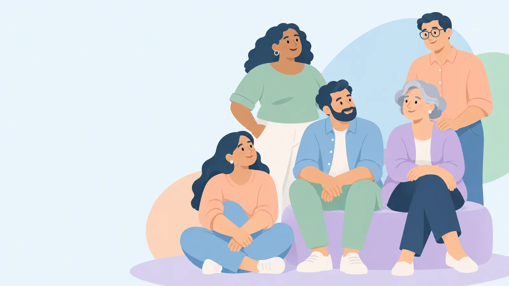

Acompañarte en cada etapaWith you at every stage
Información clara sobre el síndrome de Cushing para ti y para quienes te cuidan: qué es, qué pruebas te pueden pedir y cómo prepararte.Clear information about Cushing's syndrome for you and those who care for you: what it is, which tests you may need and how to prepare.
Demo en borrador.Draft demo. Contenido pendiente de revisión por el equipo clínico. No usar con pacientes todavía.Content pending review by the clinical team. Do not use with patients yet.
¿En qué momento estás?Where are you right now?

Me están estudiandoI'm being tested
Qué esperar de las pruebasWhat to expect from tests

Ya tengo un diagnósticoI have a diagnosis
Entender qué significaUnderstanding what it means
Voy a recibir tratamientoI'm starting treatment
Opciones y preparaciónOptions and preparation

Estoy en recuperaciónI'm recovering
Cuidados y seguimientoCare and follow-up
Recursos de utilidadUseful resources
Entender el CushingUnderstanding Cushing'sQué es, por qué ocurre y preguntas frecuentesWhat it is, why it happens and FAQ
Entiende tus exámenesUnderstand your testsCómo prepararte para cada pruebaHow to prepare for each test
Prepara tu consultaPrepare your visitComplétala, imprímela o envíatelaFill it in, print it or send it to yourself
Recursos de confianzaTrusted resourcesGuías de sociedades científicas, asociaciones de pacientes y tarjeta de emergenciaGuides from scientific societies, patient associations and emergency card
Cuida tu bienestarLook after your wellbeingApoyo en tu día a díaSupport in your daily life